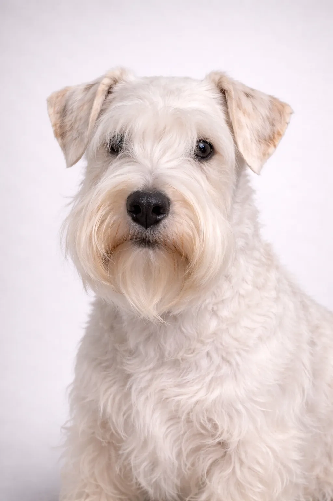

Sealyham Terrier
Kendt for at være udadvendt og rolig har Sealyham Terrier vundet hjerter verden over.
11-12 in
18-24 lbs
Racevurderinger
Temperament
Oversigt
Sealyham Terrier er en sjælden walisisk race der engang var Hollywood-berømtheders yndling.
Temperament
Sealyham Terrier er kendt for at være udadvendt, rolig, frygtløs. De er fremragende med børn og er vidunderlige familiehunde. Tidlig socialisering hjælper dem med at blive alsidige ledsagere.
Sundhed
Generelt sund med en levetid på 12-14 år. Almindelige bekymringer inkluderer knæskalluksation, tandproblemer og hudproblemer. Regelmæssige dyrlægetjek og forebyggende pleje er vigtig. At opretholde en sund vægt hjælper med at forebygge mange helbredsproblemer.
Motion
Moderate motionsbehov med daglige gåture og regelmæssige lege-sessioner. De nyder en blanding af fysisk aktivitet og afslappende tid. Interaktive spil og træningssessioner giver mental stimulering. En konsistent motionsrutine holder dem sunde og glade.
⦿ Passer Denne Race til Dig?
✓ Bedst For
- Lejlighedsbeboere
- Dem der ønsker en roligere terrier
- Allergikere
- Familier
✗ Ikke Ideel For
- Dem der ønsker en meget aktiv hund
- Hjem med små kæledyr
- Ejere der ikke vil pleje
- Dem der ønsker en almindelig race
Vores Vurdering: Sjælden, charmerende walisisk terrier med en rolig men modig personlighed. Sealyham Terrier egner sig godt til lejlighedsliv.